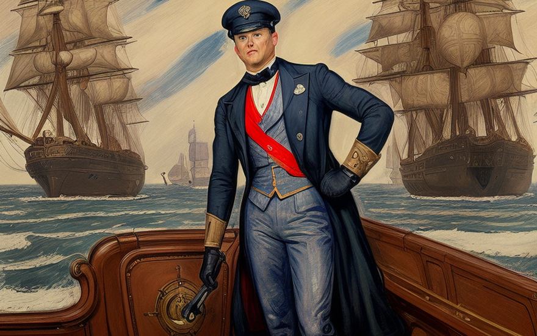
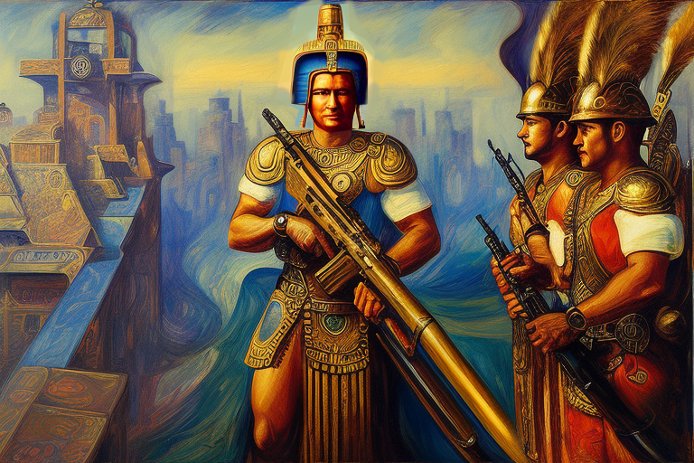
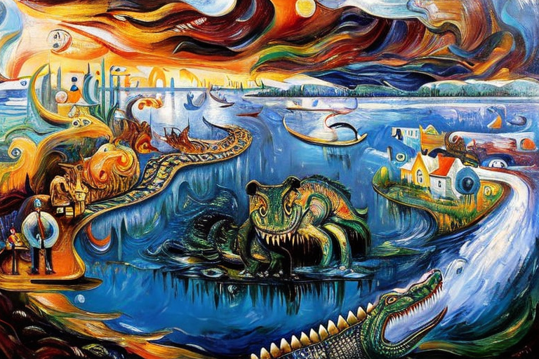
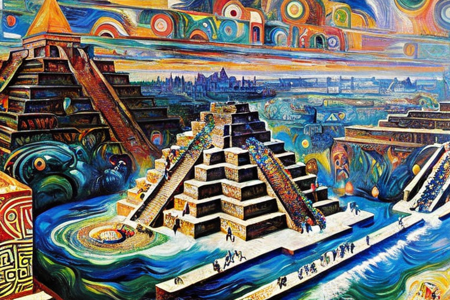

Louis Kalaspo and the New World of soft bullets
HOME
Table of Contents
Exploring the land

¡Hostia! Listen up, amigos. It’s the story of Louis Kalaspo, a rough and tumble hombre who set out to conquer the new world. It was the year of our Lord 1632 when Louis Kalaspo set foot on the shores of the New World. He was a brave man, full of curiosity and a thirst for adventure. The air was thick with the sweet scent of tropical flowers and the cries of exotic birds.
As he journeyed deeper into this strange and unknown land, he discovered something incredible. It was a land of soft bullets, where the native tribes shot their enemies with a weapon that seemed almost magical.
So he saddled up his trusty steed, a black stallion with a white blaze on his forehead, and set out into the wilds of the new world. Finally, after weeks of riding, Louis came upon a valley unlike any he had ever seen before. The grass was green and lush, the trees towered high into the sky, and the animals…oh, the animals! There were creatures there that Louis had never even heard of before. There were giant sloths with razor-sharp claws, fierce jaguars with teeth as long as a man’s forearm, and herds of strange, horned beasts that roamed the valley floor.
Louis marveled at this discovery and soon realized that he had stumbled upon a land of great wealth and untold riches. But it was the soft bullets that intrigued him the most. They were everywhere, lying in piles on the ground. They were like nothing he had ever seen before. They were round and smooth, and when he picked one up, he could barely feel it in his hand. He watched as the native tribes hunted and defended their territories with these strange weapons. He wondered what they were made of and how they worked.
The Aztec warriors

As Louis Kalaspo continued his journey through the land of soft bullets, he knew he had struck gold. He started to scoop up the soft bullets by the handful, filling his saddlebags and his pockets. He was going to be rich beyond his wildest dreams.
But as he was filling his pockets, Louis heard a sound that made his blood run cold. It was the sound of one of the native tribes who wielded the soft bullets from somewhere in the trees. Louis reached for his trusty revolver, but it was gone. He must have dropped it when he was scooping up the soft bullets.
They were fierce and unforgiving, and they didn’t take kindly to outsiders like Louis. As he was riding through the dense forest, Louis heard the drums in the distance. He urged his horse forward, eager to see what tribe was making the noise. But as he rode closer, he realized that he had made a terrible mistake. The drums were a warning, a signal to the tribe that an outsider was approaching.
Before Louis could react, he was surrounded by a group of warriors. They were armed with ballistic arrows, and they had no intention of letting him go. At first, Louis was cautious but respectful as he approached the tribe. He came bearing gifts of beads and trinkets, hoping to establish a peaceful relationship with them. But as he got closer, he saw the warriors of the tribe pull out their weapons.
Louis tried to fight back, but he was outnumbered and outmatched. The bullets flew towards him, striking his clothing but bouncing off harmlessly. Louis realized with amazement that these were the soft bullets he had heard about, and he was grateful for the protective qualities of his thick leather jacket. The tribesmen fired again and again, but the bullets merely bounced off and fell to the ground.
He quickly realized that the secret to the soft bullets’ ineffectiveness lay in the Spaniards’ clothing. The thick fabric of his garments was impenetrable to these strange weapons. It was then that Louis knew he must find out more about the source of this power.
As the tribe continued to fire their soft bullets, Louis tried to communicate with them, but the language barrier proved to be a significant obstacle. He had to find another way to discover the secret behind the soft bullets.
Suddenly, an idea struck him. He took off his coat and handed it to one of the tribesmen. He signaled for them to fire at him again, and this time, the soft bullets struck him directly on his exposed skin. To his surprise, he felt nothing but a slight stinging sensation.
As he examined the bullets that had fallen to the ground, he realized that they were made of a strange material. It was unlike anything he had ever seen before - a soft and malleable substance that seemed to defy the laws of physics.
The shear fluid river
As he rode through the dense jungle, he felt a sudden chill. He looked up to see the sky turning dark, as if a storm was approaching. But there were no clouds in the sky. Then he heard the sound of rushing water, and he realized that he had stumbled upon something incredible. He rode closer, and there it was - a river of shear fluid.
Louis Kalaspo stood at the edge of the river, gazing at the cool, viscous liquid flowing before him. He had heard whispers of this mysterious fluid from the native tribes, but had never witnessed it himself until now.
Cautiously, he dismounted his horse and approached the river, dipping a finger into the fluid. As he felt the cool liquid coat his skin. He then dipped his clothes into the river, and they emerged soaked and glistening with the shear fluid. He could feel the weight of the fluid on his clothes, but they still felt supple and flexible.
Louis decided to put the fluid to the test. He signaled to the native tribesmen to fire at him once again, and this time, the soft bullets struck his clothes. To his amazement, they bounced off his garments as before, but this time, they did not fall to the ground.
Instead, they landed on the soaked fabric and seemed to melt into the material. The soft bullets lost their shape and became amorphous blobs, unable to penetrate the clothes. Louis had discovered the secret of the shear fluid. Its unique properties allowed it to disrupt the soft bullets’ structure, rendering them ineffective against the Spaniards’ clothing.
The Alligator’s Ambush

Louis Kalaspo had been traveling along the river, his clothes still dripping with shear fluid and admiring the beauty of the soft-bullet landscape, when he suddenly heard a splash. He turned to see an alligator sliding into the water, its eyes fixed on him.
He instinctively reached for his musket, but the gator was too quick. In a flash, it lunged out of the water and clamped its jaws around his leg.
But to Louis’s surprise, the alligator’s teeth were soft, like the soft bullets he had encountered before. The shear fluid on his clothes had worked its magic once again.
With a yell, Louis kicked the alligator off his leg and stumbled backwards. The alligator disappeared back into the murky depths of the river, leaving Louis with a newfound respect for the strange powers of the shear fluid.
Louis managed to free himself from the alligator’s jaws, and he quickly assessed his injuries. He examined the leg, expecting to see deep puncture wounds, but instead, he saw only bruises where the alligator’s teeth had grazed his skin. He knew that without the shear fluid on his clothes, his encounter with the alligator could have ended very differently.
As he continued on his journey, Louis began to see the alligator as a symbol of the dangers of this new world. Even the most seemingly harmless creatures could pose a threat.
A Test of faith

As he traveled, Louis noticed that the land was becoming drier and drier. This was unusual for the time of year, and he knew that it could only mean one thing - a drought was coming.
He soon came across a tribe, who were also experiencing the effects of the drought. They told him that the rains had not come as expected, and that they were worried about their crops and their livestock.
Louis sympathized with the tribe, and he knew that they were also concerned about the lack of sacrifices. He had heard from others that the native people believed that sacrifices were necessary to appease the gods, and that without them, they risked angering the gods and bringing down their wrath.
Soon thereafter the natives started preparing for a sacrifice, and Louis was to be the offering. They had heard of his strange ability to repel their weapons and saw him as a challenge to their gods.
Louis tried to reason with them, to explain that he was not invincible, but they did not listen. They were convinced that he was a powerful being, and they wanted to prove to their gods that they were strong enough to overcome them. They were eager to show their strength, for the obsidian that they used for sacrifices was rendered useless against Louis’s skin. They saw this as an opportunity to demonstrate their physical prowess to their gods.
The preparations for the sacrifice were elaborate, with the men painting their faces and donning feathered headdresses. Louis watched as they danced around him, their weapons glinting in the sun.
But even as they closed in on him, Louis remained calm. He knew that he had a trick up his sleeve - the shear fluid that he had discovered earlier. He had soaked his clothes in the fluid once again, and he knew that it would protect him from the tribe’s weapons.
As the men lunged at him with their obsidian rocks on hand, Louis stood firm. The obsidian bounced off him harmlessly, and the men looked on in shock and awe.
He suggested that they offer a different kind of sacrifice - a sacrifice of their own making. They could come together as a community and offer something that they had created, rather than something that they had taken from the land.
The natives were hesitant at first, but they saw the wisdom in Louis’s words. They began to gather together, creating works of art, weaving baskets and blankets, and carving intricate designs into wood.
When the time for the sacrifice came, Louis stood at the center of the village, surrounded by the offerings of the people. He knew that this was not a sacrifice in the traditional sense, but he hoped that it would be enough to appease the gods.
As the natives prayed, the skies began to darken. A cool breeze blew through the village, and suddenly, rain began to fall. It was a miracle - the first rain in weeks.
The natives looked up in awe, and Louis smiled. He knew that he had not brought the rain, but he had helped to restore their belief in themselves. They no longer felt the need to sacrifice humans to the gods, for they had found a new way to honor them.